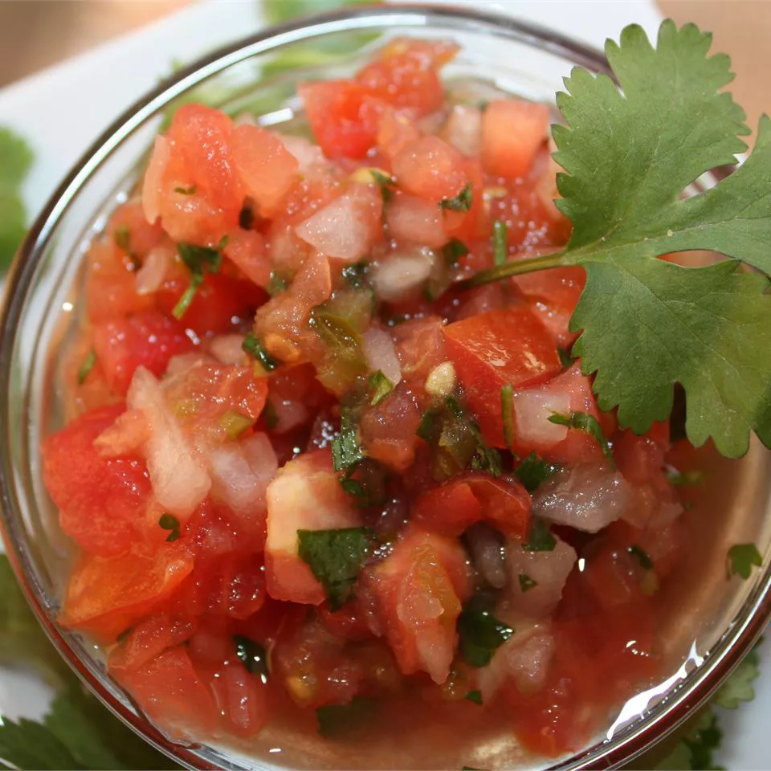

Jalapeno Salsa
This is a fresh homemade salsa, with a kick!!

This salsa has a nice heat from Jalapenos that's sure to be a hit at the party!!
Ingredients
- 3 tomatoes, chopped
- 1/2 cup finely diced onion
- 5 Jalapeno peppers, finely chopped
- 1/2 cup chopped fresh cilantro
- 1 teaspoon salt
- 2 teaspoons lime juice
Direstions
- In a medium bowl, stir together tomatoes, onion, Jalapeno peppers, cilantro, salt, and lime juice.
- Chill for one hour in Refrigerator before serving.
- Serve in dipping bowl or as a topping on your favorite dish and enjoy!!